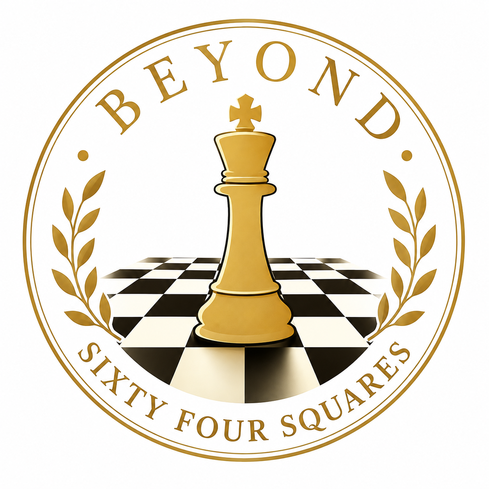

Empowering young minds through the timeless game of chess.

Our Mission:
Beyond Sixty-Four Squares aims to make quality chess instruction, opportunities,
and a supportive chess community accessible to players of all ages, genders, and skill levels.
We strive to create an environment where every individual can discover the benefits of chess,
develop their skills, and find a place to grow.
Through accessible instruction, mentorship, and opportunities, we empower every player
to grow their chess skills and pursue their individual goals.
Our Core Values:
Beyond Sixty-Four Squares is committed to excellence in chess, meaningful community impact,
and fostering an inclusive environment where players can learn, compete, and grow. Through partnerships and
collaborations with local organizations, we work to expand access to chess, inspire new players,
and create positive experiences within our community.